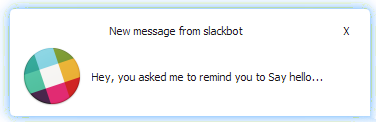
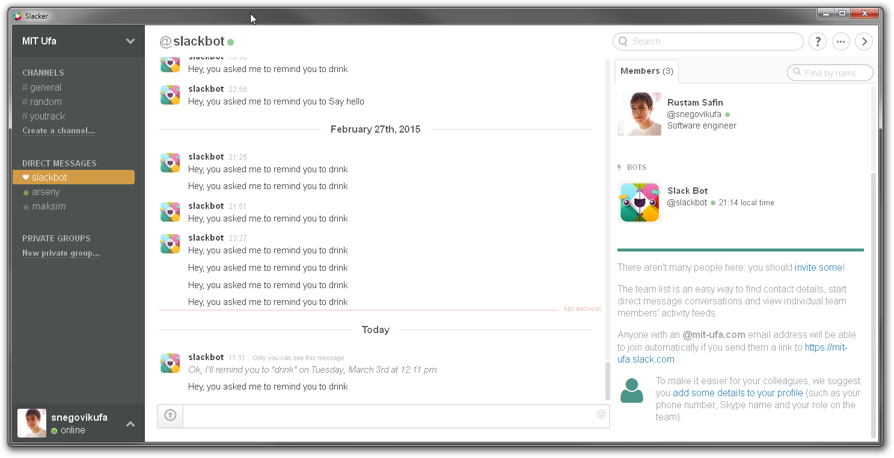
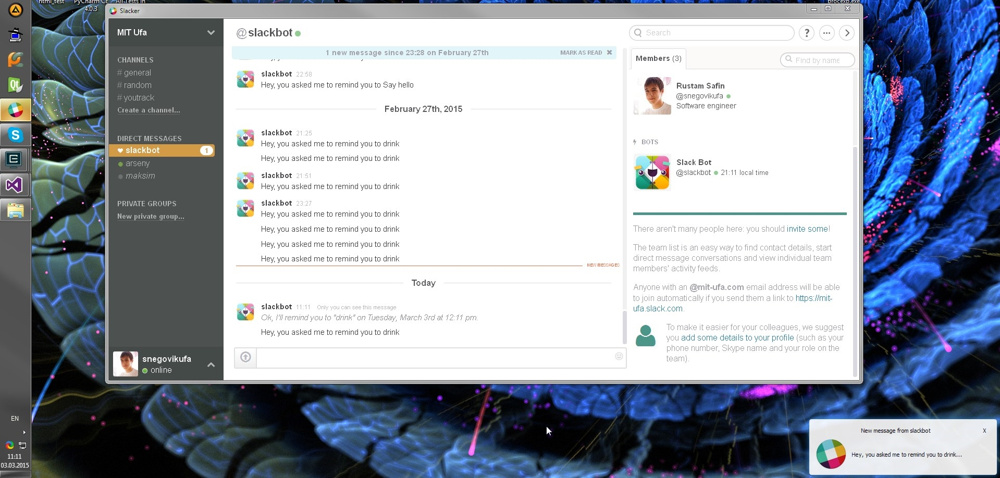

As there were no desktop client of Slack for Windows
we decided to write our own.
We took Qt Webkit framework, added some magic and
we started to create useful client with notifications.
We release TeamWords for free. Have fun!
Nobody wants to Snegovikufass important message!
You will see notifications in taskbar and tray area.
Other screenshots

